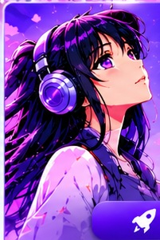
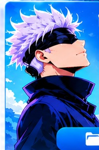
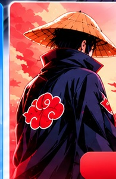

Vue d'ensemble

✦ Espace Création
Générateur de publications, Studio Reels, campagnes et quiz.

▣ Espace Production
Studio visuel, médiathèque, calendrier et contrôle qualité.

⚙ Espace Automatisation
Radar RSS, GitHub Actions, rapports et diagnostics.
🔥 Tendances du moment
mots les plus fréquents dans les titres du radarDernières actualités
Projets récents
Flux d'activité
Aperçu d'une publication
Prochaines étapes
Anime Trend Studio V3
Anime Trend Content Studio
Studio éditorial local et gratuit pour la page Manga, Animé et Actualités : rédaction, visuels PNG, Reels, campagnes, radar RSS, file éditoriale et calendrier.
Version
V 3.0 · édition tableau de bord · fonctionnement 100 % navigateur, sans clé API ni serveur payant.
Crédits
Illustrations originales générées pour le projet. Sources d'actualités : flux RSS publics, avec lien vers chaque article original.
Aide & support
Démarrer
1. Rédigez un contenu dans l'Atelier. 2. Préparez son visuel dans le Studio visuel. 3. Ajoutez-le à la file éditoriale et au calendrier. 4. Publiez manuellement via Meta Business Suite.
Données
Les créations sont enregistrées dans le stockage local de ce navigateur. Utilisez l'export JSON des Réglages pour conserver une copie.
Limites
Aucune publication Facebook automatique n'est incluse. Le studio ne génère pas d'images ni de vidéos : il prépare des prompts et des storyboards.
Créer une publication
Générateur éditorial local : choisissez le format, le sujet, le ton et la longueur. Plusieurs formulations sont proposées sans API payante ; relisez et personnalisez avant publication.
Au clic, le texte est ajouté à la file éditoriale et un visuel PNG est téléchargé. Sur Android, vérifiez le dossier Téléchargements.
Studio Reels
Transformez une idée en séquence verticale structurée. Le studio prépare le script et les prompts ; il ne prétend pas rendre une vidéo finale.
Storyboard prêt à produire
Studio visuel
Créez des visuels adaptés à Facebook et Instagram : publication, Story, couverture et carrousel. Importez une image que vous possédez ou que vous êtes autorisé à utiliser, personnalisez le texte puis exportez en PNG.
1. Paramètres du visuel
2. Exports rapides
Les exports utilisent le même visuel et adaptent automatiquement ses dimensions.
Aperçu prêt. Aucun contenu n'est publié automatiquement.
3. Aperçu en direct
PNG haute résolutionConseil : gardez le titre court, utilisez un contraste fort et vérifiez la lisibilité sur téléphone. Les illustrations importées doivent être originales, licenciées ou autorisées.
Quiz & communauté
Préparez des formats interactifs. Les questions factuelles doivent être vérifiées avant diffusion.
Studio de campagnes
Transformez une seule idée en plusieurs formats cohérents. Tout est généré localement à partir de modèles éditoriaux : aucune clé API, aucun abonnement et aucune publication automatique.
Guide de campagne
Pack généré
Radar d'actualités
Articles récents collectés par GitHub Actions depuis des flux RSS publics. Le studio conserve le titre, le lien, la date et la source ; il ne copie pas les articles.
Actualités enregistrées
Une actualité reste « À vérifier » jusqu'à ce que vous ayez consulté la source originale. Seule une actualité vérifiée peut devenir un brouillon.
File éditoriale
Retrouvez les contenus enregistrés, copiez-les, changez leur statut et exportez une sauvegarde.
Calendrier éditorial
Planifiez vos contenus localement. Une échéance n'est pas une publication Facebook : vous publiez vous-même, puis marquez le contenu comme publié.
Planning
Médiathèque
Stockez des visuels personnels ou autorisés. Les fichiers restent sur cet appareil et peuvent remplir le stockage du navigateur.
Contrôle qualité
Une checklist éditoriale pour réduire les risques de désinformation, de spam et de réutilisation non autorisée. Aucun outil ne peut garantir l'absence de signalement.
GitHub & automatisation
La version 3.0 automatise la collecte RSS et la mise à jour du radar. Elle reste en mode préparation : aucune publication Facebook n'est envoyée.
Configuration du projet
Dépôt associé
rasllaonjaonja-opsCycle prévu
Toutes les 5 heuresLe workflow peut aussi être lancé manuellement depuis l'onglet Actions du dépôt.
Ouvrir le dépôt GitHub ↗Ce qui est réellement automatisé
- Lecture de flux RSS publics.
- Détection des doublons par identifiant / URL.
- Classement simple par mots-clés et fraîcheur.
- Écriture de data/latest-news.json.
- Publication du site via GitHub Pages.
Installation / mise à jour
- Décompressez le ZIP V3.
- Ajoutez les fichiers au dépôt GitHub en conservant les dossiers.
- Remplacez les fichiers de l'ancienne version par ceux de la V3.
- Dans Settings → Actions → General, autorisez les workflows à écrire dans le dépôt.
- Dans Settings → Pages, choisissez GitHub Actions.
- Ouvrez Actions → « Anime Trend RSS Radar » → Run workflow.
- Attendez le succès, puis rechargez votre site Pages.
Limites assumées
La collecte dépend de la disponibilité des flux RSS et des limites des sites sources. Le système n'extrait pas les articles complets, ne télécharge pas les images protégées et ne publie pas sur Facebook. La publication native via Meta reste séparée et peut nécessiter des autorisations d'application.
Réglages
L'effacement supprime les brouillons, sources, médias, planning et réglages de ce navigateur. Exportez d'abord une sauvegarde.
Vérifier l’application
Contrôle local : stockage, export PNG, éléments de l’interface et cohérence des données. Aucune donnée n’est envoyée.